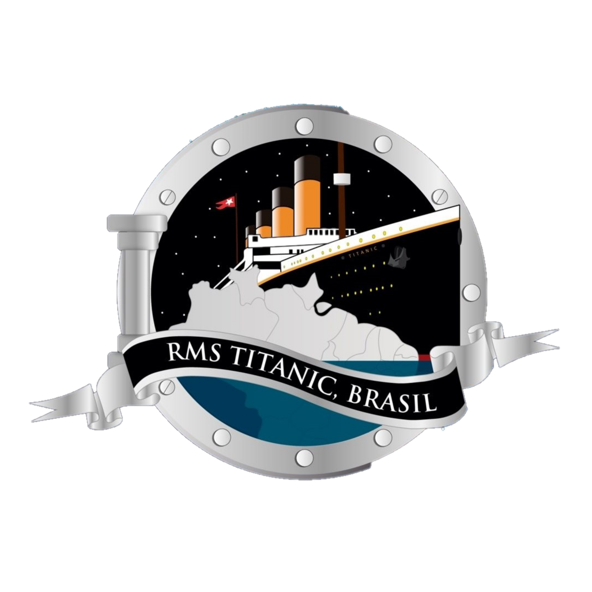

TITANIC
Nem Deus pode afundá-lo
O titanic é a melhor experiencia marítima que um ser humano pode ter, ele é o navio mais bem construído do século, e foi projetado com o intuito de gerar uma experiencia incrível.
O Titanic fornece aos seus passageiros as instalações mais luxuosas e
confortáveis do que qualquer outro navio. As primeiras classes vão do convés dos botes até o convés E
e incluem um ginásio com os equipamentos mais modernos, quadra de squash, sala de fumar decorada com uma lareira e pinturas de Norman Wilkinson,
restaurante à la carte, dois cafés decorados com palmeiras, piscina coberta, banhos turcos, sala de leitura com mobílias de mogno e vitrais e convés de passeio coberto.